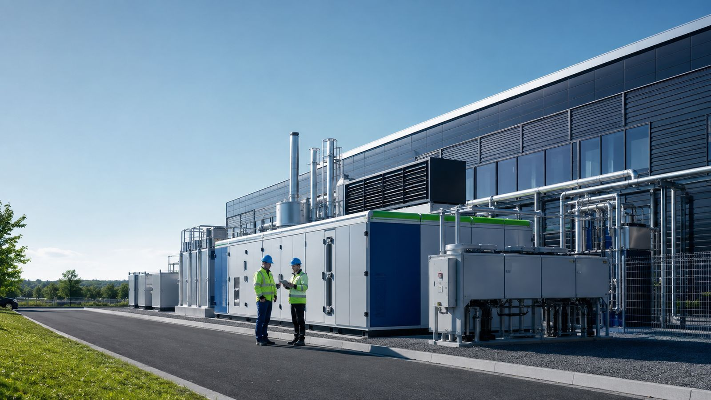

Agreed supply capacity is the most your connection is contracted to take, in kVA, and it's on your electricity bill. Convert your busiest half hours from kW to kVA (divide by the power factor), keep a safety margin, and the gap is your headroom. For heat pumps, test the heating months only: summer chiller peaks don't matter for a load that runs from October to April.

Why capacity decides decarbonisation plans
Most routes to net zero on a healthcare estate move heat from gas to electricity. A heat pump producing 300 kW of heat at a seasonal efficiency (COP) of 3 draws about 100 kW of electricity. Switching off a gas CHP engine that generated 400 kW means importing that 400 kW from the grid instead. Electric vehicle fleets, pool cars and patient transport add more. If the connection can't take it, the network operator (DNO) has to increase it, which can take years and cost far more than the plant. See electrical capacity on hospital sites and moving away from CHP.
kW, kVA and power factor
Half-hourly data gives average demand in each half hour, in kW. Capacity is set in kVA, which also counts reactive power drawn by motors, fans and older lighting. The link is the power factor:
Working out headroom from half-hourly data
- Use at least a full year, so you catch both winter heating peaks and summer chiller peaks.
- Enter the agreed capacity from the bill and your power factor (0.95 if you don't know it).
- Keep a margin, typically 10%, for growth and short spikes the half-hour average hides.
- Read the firm headroom: the largest constant extra load that fits in every half hour of the year.
- Test the real load. The analyser's headroom test takes a load in kW, the hours it runs and whether it runs all year or October to April only, and counts the half hours it would push over the limit.
In our worked example, a community hospital on a 400 kVA supply has only 53 kW of firm headroom across the year, because July chillers set the peak. Tested over the heating months, a 100 kW heat pump fits and a 150 kW one doesn't.
What's different on a hospital
- Two supplies and generators. Many hospitals have more than one incoming supply and standby generators for essential services. Check which supply new plant will sit on, and whether it needs to be generator-backed, because that sizes the generators too.
- CHP hides demand. While a CHP engine runs, the import meter shows only part of the site's load. The days the engine was off show the true import, so look at those before assuming you have headroom. The analyser's peaks list will often be CHP outage days.
- Nights aren't quiet. On an office, overnight EV charging fits in the trough. On a 24-hour hospital the trough is shallower, so test it rather than assume it.
- Several meters, one connection. Where a site has more than one meter behind one connection, add them up before comparing with capacity. The analyser can group meters into one site.
What half-hourly data can't tell you
Half-hour averages smooth out spikes such as motor starts, so treat the result as an early screen, not a design. Network capacity upstream of your site, fault levels and the cost of an increase come from the DNO. Use the analyser to decide which option to take to them, and to show them your measured profile.
Solar and your connection
Solar lowers daytime import but adds export capacity questions under G99. On a 24-hour hospital, most output is used on site, so export limits rarely cost much. See solar planning and grid connection.
Questions people ask
Where do I find our agreed supply capacity?
On the electricity bill, usually as agreed, authorised or available capacity in kVA. Your supplier or DNO can confirm it, and the connection agreement sets it.
Why test a heat pump over the heating months only?
Because it runs mainly from October to April. A summer chiller peak sets the all-year headroom figure, but it does not coincide with heat pump load.
What power factor should I use?
Use the figure from your bill or power quality data if you have it. If not, 0.95 is a reasonable starting point; it is probably lower if you pay reactive power charges.
Is this enough for a DNO application?
No. It is the evidence to decide what to ask for. The DNO studies the network and makes the formal offer.